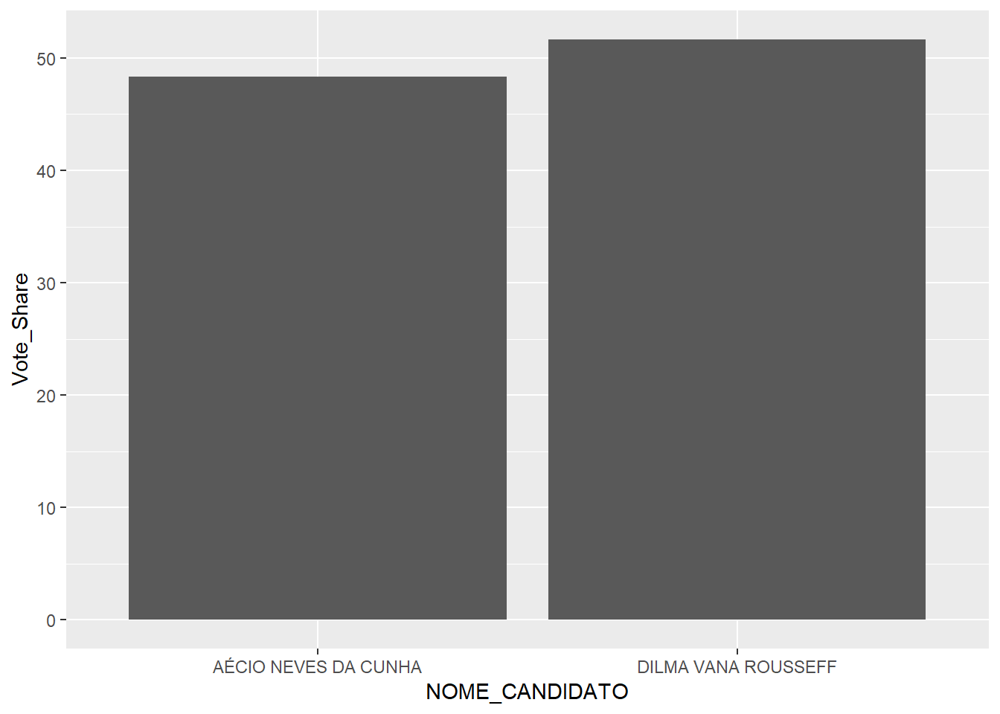
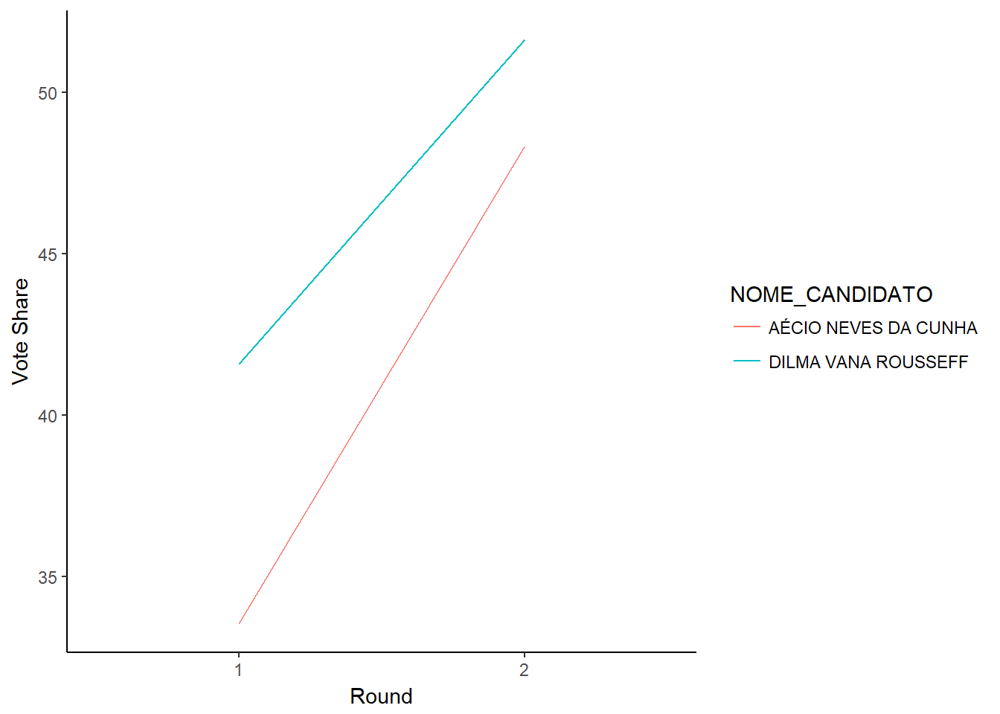

Create a project in Rstudio.
Download a CSV from cepesp.io to your project folder. Use the ‘Eleicoes por Cargo’ tab with the default options. The file should include the results of the 2014 Presidential election aggregated for the whole of Brazil.
Create a new Rmarkdown document file.
Install and load the ‘tidyverse’ and ‘knitr’ packages
install.packages(c("tidyverse","knitr"))
library(tidyverse)
library(knitr)library(tidyverse)
library(knitr)pres_2014_elec_results <- read_csv("TSE_PRESIDENTE_BR_CANDIDATO_2014.csv")pres_2014_elec_results %>% count()## # A tibble: 1 x 1
## n
## <int>
## 1 13pres_2014_elec_results %>% filter(NUM_TURNO==1) %>%
count()## # A tibble: 1 x 1
## n
## <int>
## 1 11voters_first <- pres_2014_elec_results %>%
filter(NUM_TURNO==1) %>%
summarize(Total_Votes=sum(QTDE_VOTOS)) %>%
pull(Total_Votes)## [1] 104023802voters_second <- pres_2014_elec_results %>%
filter(NUM_TURNO==2) %>%
summarize(Total_Votes=sum(QTDE_VOTOS)) %>%
pull(Total_Votes)
pct_change <- 100*(voters_second - voters_first)/voters_firstThe percentage increase in the total number of people who voted between the first and second round was 1.5%.
pres_2014_elec_results <- pres_2014_elec_results %>%
group_by(NUM_TURNO) %>%
mutate(Vote_Share=100*(QTDE_VOTOS/sum(QTDE_VOTOS)))## # A tibble: 13 x 3
## # Groups: NUM_TURNO [2]
## NUM_TURNO NOME_CANDIDATO Vote_Share
## <int> <chr> <dbl>
## 1 1 "MAURO LU\u00cdS IASI" 0.0460
## 2 1 RUI COSTA PIMENTA 0.0118
## 3 1 "JOS\u00c9 LEVY FIDELIX DA CRUZ" 0.430
## 4 1 MARIA OSMARINA MARINA DA SILVA VAZ DE LIMA 21.3
## 5 1 EVERALDO DIAS PEREIRA 0.750
## 6 1 "A\u00c9CIO NEVES DA CUNHA" 33.5
## 7 2 "A\u00c9CIO NEVES DA CUNHA" 48.4
## 8 1 JOSE MARIA EYMAEL 0.0589
## 9 1 LUCIANA KREBS GENRO 1.55
## 10 1 "JOS\u00c9 MARIA DE ALMEIDA" 0.0877
## 11 1 DILMA VANA ROUSSEFF 41.6
## 12 2 DILMA VANA ROUSSEFF 51.6
## 13 1 EDUARDO JORGE MARTINS ALVES SOBRINHO 0.606winner <- pres_2014_elec_results %>%
filter(NUM_TURNO==2) %>%
arrange(-Vote_Share) %>%
slice(1) %>%
select(SIGLA_PARTIDO, NOME_CANDIDATO, Vote_Share)
winner_name <- winner %>% pull(NOME_CANDIDATO)
winner_Votes <- winner %>% pull(Vote_Share)The winner was DILMA VANA ROUSSEFF with 51.6% of the vote.
pres_2014_elec_results %>%
filter(NUM_TURNO==1) %>%
select(NOME_CANDIDATO, SIGLA_PARTIDO, Vote_Share) %>%
kable()NUM_TURNO NOME_CANDIDATO SIGLA_PARTIDO Vote_Share ———- ——————————————- ————– ———– 1 MAURO LUÍS IASI PCB 0.0459943 1 RUI COSTA PIMENTA PCO 0.0118473 1 JOSÉ LEVY FIDELIX DA CRUZ PRTB 0.4295921 1 MARIA OSMARINA MARINA DA SILVA VAZ DE LIMA PSB 21.3187930 1 EVERALDO DIAS PEREIRA PSC 0.7503215 1 AÉCIO NEVES DA CUNHA PSDB 33.5473328 1 JOSE MARIA EYMAEL PSDC 0.0588808 1 LUCIANA KREBS GENRO PSOL 1.5498241 1 JOSÉ MARIA DE ALMEIDA PSTU 0.0876809 1 DILMA VANA ROUSSEFF PT 41.5940075 1 EDUARDO JORGE MARTINS ALVES SOBRINHO PV 0.6057258
pres_2014_elec_results %>%
filter(NUM_TURNO==2) %>%
ggplot() +
geom_col(aes(x=NOME_CANDIDATO,y=Vote_Share))
#Place this line in a chunk at the start of your code to make sure only the outputs appear
opts_chunk$set(echo=FALSE, warning=FALSE, message=FALSE)Produce a PDF which combines all your outputs (text, table, chart).
Produce a web page which combines all your outputs (text, table, chart).
(If you have time…) Include a line chart which shows how the vote share of the two candidates that made the second round changed from the first to the second round.
runoff_cands <- pres_2014_elec_results %>%
filter(NUM_TURNO==2) %>%
pull(NUMERO_CANDIDATO)
pres_2014_elec_results %>% filter(NUMERO_CANDIDATO %in% runoff_cands) %>%
ggplot() + geom_line(aes(x=as.factor(NUM_TURNO),y=Vote_Share,group=NOME_CANDIDATO,color=NOME_CANDIDATO)) +
theme_classic() +
xlab("Round") +
ylab("Vote Share")